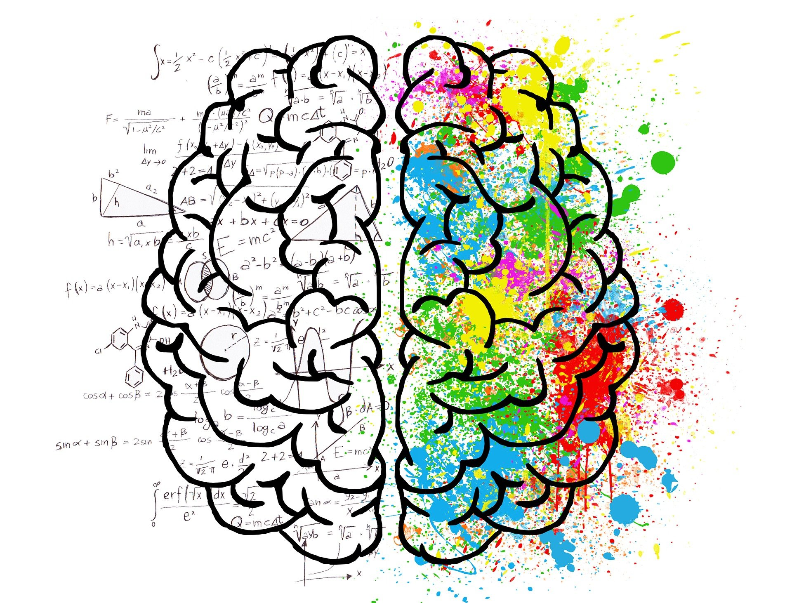

The quality of human performance is determined not by the amount of motivation, but by the degree to which that motivation is autonomous rather than controlled.

Goals can come from outside rewards or from internal values and enjoyment. Understanding the difference helps you choose goals that create lasting motivation.
| Goal Type | What It Focuses On | Examples | Effect on Motivation |
|---|---|---|---|
| Extrinsic Goals | External rewards, recognition, money, or approval. | Becoming famous, earning money, getting high grades only for praise. | Motivation may decrease once rewards disappear. |
| Intrinsic Goals | Personal growth, enjoyment, meaning. | Learning skills, improving health, helping others. | Creates stronger long-term motivation. |
| Motivation Type | Description | Example | Position on SDT Scale |
|---|---|---|---|
| Amotivation | No motivation or reason to act. | Doing only the absolute minimum required. | Worst |
| External Regulation | Motivation driven by reward or punishment. | Completing homework to avoid a bad grade. | Low |
| Introjected Regulation | Driven by guilt or ego. | Exercising to avoid feeling like a failure. | Medium-Low |
| Identified Regulation | You personally value the goal. | Exercising for long-term health. | Medium-High |
| Integrated Regulation | The behavior aligns with identity. | Volunteering because it fits your values. | High |
| Intrinsic Motivation | Doing something because you enjoy it. | Painting or music for fun. | Best |
A famous study by Lepper, Greene, and Nisbett examined how rewards affect motivation.
| Group | Condition | Description |
|---|---|---|
| Expected-Award | Extrinsic | Children expected an award for drawing. |
| Unexpected-Award | Mixed | Children received an award after drawing. |
| No-Award | Intrinsic | Children drew without rewards. |